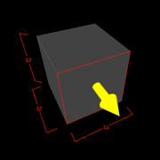

Editing Objects
TrenchBroom allows you to move, rotate and flip objects. You can also change the shape of brushes by face dragging and clipping them. All properties of faces and entities can be changed using the inspector. Finally, you can of course delete objects.The Editing Plane
It is very important that you understand how the view direction of the camera relates to editing. Since the mouse is a 2D input device, you cannot directly control all three dimensions when you edit objects with the mouse. For example, if you want to move a brush around, you can only move it in two directions by dragging it. Because of this, many editing operations take the view direction into account to decide which dimensions the mouse movements should be mapped to. So if you are looking down along the Z axis while you are moving a brush, your mouse movement will be mapped to the X and Y axes and the brush can only be moved on the XY plane. The plane which the mouse movement is mapped to in editing operations is called the editing plane. In general, TrenchBroom chooses either the XY plane, the XZ plane or the YZ plane as the editing plane depending on whether the camera looks generally in the direction of the (positive or negative) Z, Y or X axis, respectively.

Remember that you can use the quick info bar at the bottom of the 3D view to keep your orientation. On top of that, the compass gives you a visual hint as to which plane is the current editing plane. In the screenshot on the left, the predominant axis of the camera direction is the Y axis, which is why it has gray color. The two axes which are rendered in color make up the editing plane, which in this case is the XZ plane.
Moving Objects
You can either move objects using the cursor keys or the mouse. The ← and → cursor keys move the selected objects horizontally on the editing plane whereas the ↑ and ↓ keys move them vertically. To move objects towards or away from the camera, use the page down (⇟) and page up (⇞) keys, respectively.

To move the selected objects using the mouse, click and drag the objects with the left mouse button. This will move the objects on the current editing plane. If you move the mouse cursor over a selected object, it will be changed into a cross that shows you in which directions you can move the object by dragging it. You can move the objects towards or away from the camera using the scroll wheel of your mouse while dragging.


If grid snapping is enabled, the bounding box of the selected objects is snapped to the grid. This is most easily explained with the above screenshots. The bounding box of the object in the left screenshot is obviously not aligned to the grid because the object is smaller than the grid. If this object is moved to the right, it is not moved by the actual grid size. Instead it is moved so that the right side of the bounding box is aligned to the grid. This can be seen in the right screenshot. If you move this object to the right again, it is moved by the grid size because the right side of the bounding box was already aligned to the grid.
Rotating Objects
There are two options for rotating objects. The first is to rotate the selected brushes by 90° about the one of the axes of the coordinate system. The second is to rotate the selected objects freely using the mouse. In both cases, the center of the rotation is the center of the selected objects' bounding box.
To rotate the selected objects by 90° clockwise about one of the axes of the coordinate system, choose Edit » Object » Rotate 90 CW from the menu or hit ⌘R. If you wish to rotate the objects counter clockwise, you need to hold the option key (⌥) when you invoke the rotate command. The actual rotation axis depends on the camera direction. TrenchBroom always selects the axis which has the smallest angle with the camera direction. So if you want to rotate some objects about the Z axis, you need to orient the camera so that it looks down or up at the objects.
Objects can also be rotated freely without any restriction as to the angle or axis of the rotation. To rotate the selected objects, hold the option key (⌥) and move your mouse in the 3D view. You will see that the mouse cursor turns into a rotation cursor that indicates the axes about which the objects can be rotated using the mouse. To start the rotation, click and drag the left mouse button. If you move the mouse horizontally, the objects are rotated about the Z axis and if you move your mouse vertically, they are moved about the current vertical rotation axis. The current vertical rotation axis depends on the horizontal rotation you have already applied. Note that the rotation angle is constrained to 15° increments if grid snap is enabled. Disable grid snap to rotate the selected objects without any constraints.
Flipping Objects
The selected objects can be flipped (or mirrored) along the horizontal axis of the editing plane by choosing Edit » Object » Flip Horizontally from the menu or hitting ⌘F. To flip the selected objects along the vertical axis of the editing plane, hold the option key (⌥) when invoking the flip command.
Editing Brushes
The shape of a brush can be changed using two different tools: Face dragging and clipping. While face dragging can only change the location of individual faces, clipping can truly change the shape of a brush by adding new faces and deleting existing faces of the brush. The following section will cover face dragging while clipping is explained in the subsequent section.Face Dragging
Face dragging is actually a translation of a face along its normal. This means that you cannot move faces around freely, but are restricted to the face's norm as its single axis of movement. There are two options to initiate a face drag. The first is to select a face and then click and drag it with the left mouse button. Once you move your mouse over a selected face, you will notice that the cursor changes into a small yellow arrow. This arrow indicates the direction in which you can drag the face. If you select multiple faces and start dragging one of them, all faces will be moved along their normal. This way, you can change a brush's size in multiple dimensions at once.
The second way to drag a face is to select the brush which the face belongs to and then click and drag on a face with the left mouse button while holding the command key (⌘). Note that if you have multiple brushes selected and you drag a face, every face of any selected brush that lies in the same plane as the dragged face will be moved, too. This allows you to quickly change the sizes of multiple brushes at once.

You can also drag faces which are behind the brush, but this is only possible if you use the second option described above. If you hold the command key (⌘) and move your mouse outside of a selected brush, you will notice that the cursor again changes to the yellow arrow if you move the cursor close to an outer edge of the brush. Since any edge belongs to exactly two faces, an outer edge belongs to one face that faces the camera and one face that faces away from the camera. The latter face is the one which you can drag if you start your drag just outside of an outer edge. Note that you can only drag faces which have at least one edge visible. If you want to drag faces which are completely on the back of the brush, you need to reposition the camera.